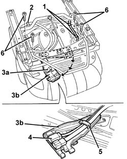
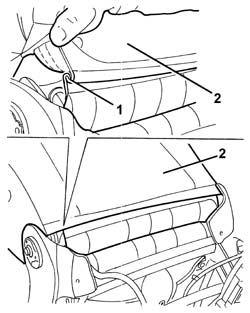
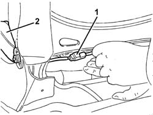
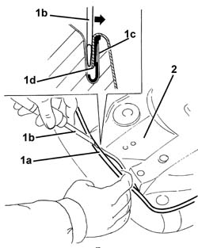
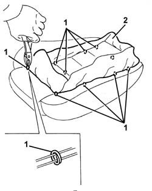
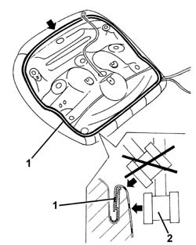

7045A86 R R HANDLE FOR FRONT SEAT FORE AND AFT ADJUSTMENT
- Path
- Procedures > 70 FITTINGS > 7045 FRONT SEATS > 7045A FRONT SEAT ASSEMBLY > 7045A86 R R HANDLE FOR FRONT SEAT FORE AND AFT ADJUSTMENT
- Kind
- repair procedure (removal / refitting; the operation number is the code)
- Applies to
- all engines; all production periods
- Interactive page
- https://sloeber94.github.io/elrnDB-aGt/en/#/125001917
Applies to: all engines; all production periods
 Removing
Removing
 Refitting
RefittingOp. 7045A43 SEAT EXTERIOR GUARD - R R
Op. 7045A44 SEAT INTERIOR GUARD - R R
1. Working under the seat, disconnect the retaining bands from the cable for the seat belt anchor link.
2. Disconnect the side bag wiring retaining bands.
3. Undo retainer (3a) and turn connector carrier bracket (3b) to an accessible position.
4. Disconnect the heat pad retainer from the rail-type retainer.
5. Disconnect the wiring from the retainer.
6. Undo the cushion bolts.

Applies to: all engines; all production periods
1. Disconnect the two bottom ends of the squab cover, hooked onto each other.
2. Raise the trim slightly

Applies to: all engines; all production periods
1. Disconnect the electrical connection for the squab heater pad.
2. Remove the cushion.

Applies to: all engines; all production periods
1. Prise up the entire cushion trim (1a) around the edge; Use a screwdriver with a blade of appropriate size (1b) to open the groove (1c) and disengage the cover profile (1d).
2. Remove the steel seat base.

Applies to: all engines; all production periods
1. Fold the seat over and use cutters to cut the top hooks securing the cushion cover to the padding.
2. Remove the cover from the padding.

Applies to: all engines; all production periods
Refitting
RemovingCheck that the cover is undamaged.
Fit the trim on the padding.
Clip on the top retaining hooks.
Position the cushion on the seat base.
Check the condition of the upholstery and the heater pad.
1. Fit the cover surround, starting from the central front area.
2. Beat in the groove using a rubber hammer.

Applies to: all engines; all production periods
Fit the cover onto the padding.
Fit the cushion on the seat.
Connect the squab heat pad electrical connection.
Do up the two lower ends of the squab trim.
Tighten the bolts securing the cushion to the seat.
 | Fastening | Component | Ø | Value (daNm) |
|---|---|---|---|---|
- | Bolt | FRONT SEAT CUSHION | M8 | 2.4 |
Position the heat pad wiring in its seat and do up the rail-type retainer.
Turn the connector carrier bracket in its seat and engage its retainer.
Connect the side bag wiring retaining band.
Connect the seat belt anchorage link wiring retaining bands.
Op. 7045A44 SEAT INTERIOR GUARD - R R
Topics linked from this page (3)
Topics that link to this page (6)
- 7045A87 R R HANDLE FOR FRONT SEAT FORE AND AFT ADJUSTMENT
- 7045A90 R R HANDLE FOR FRONT SEAT FORE AND AFT ADJUSTMENT
- 7045A91 R R HANDLE FOR FRONT SEAT FORE AND AFT ADJUSTMENT
- 7045A92 R R HANDLE FOR FRONT SEAT FORE AND AFT ADJUSTMENT
- 7045A93 R R HANDLE FOR FRONT SEAT FORE AND AFT ADJUSTMENT
- 7045M22 L/H OR R/H FRONT SEAT CUSHION HEAT PAD - R+R FOLLOWING ELECTRICAL WIRING CHECK